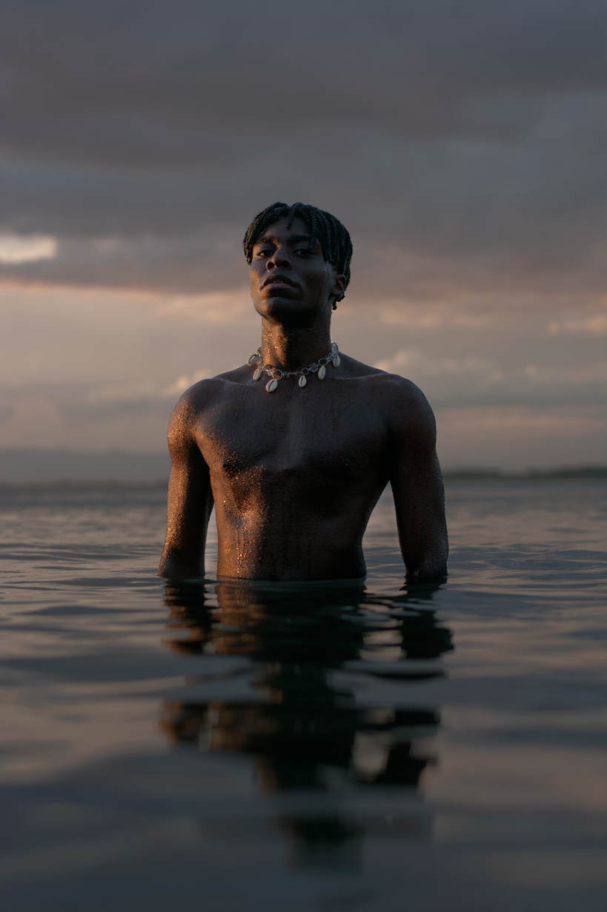
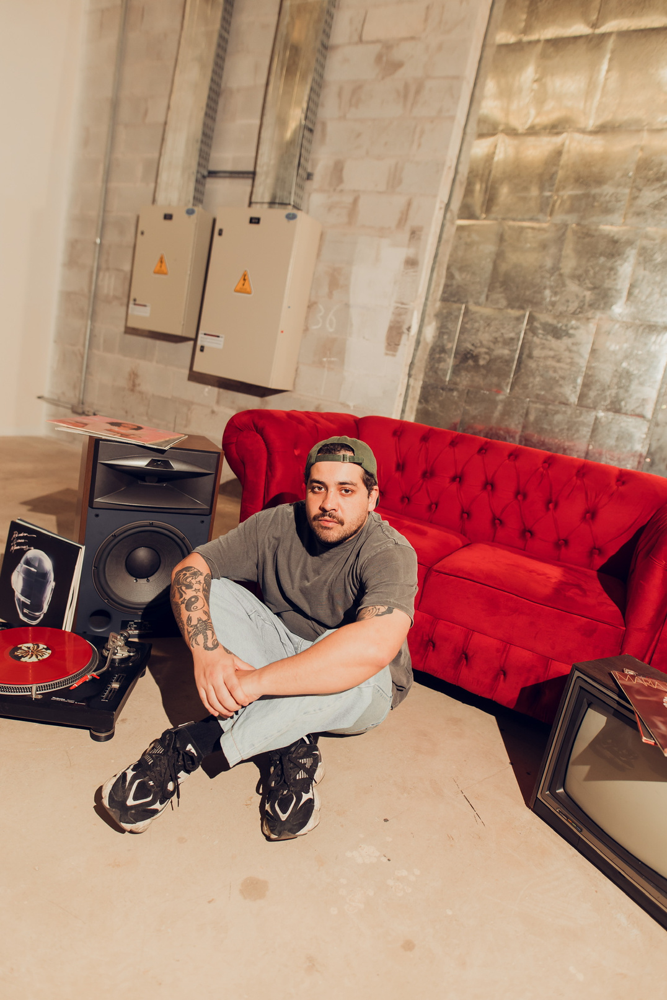

Espaço do vídeo de compilação (tela cheia)
Fernando Costa
Filmmaker e fotógrafo. Imagem para marcas, do roteiro à entrega.
Passe o mouse. Depois, role.
- filmagem
- fotografia
- criação com IA
- conteúdo real time
Vídeo
Campanhas, criação com IA e conteúdo em tempo real.

Fotografia
Retrato e moda, publicidade e documental, eventos e música. Um olhar versátil para cada tipo de imagem.
